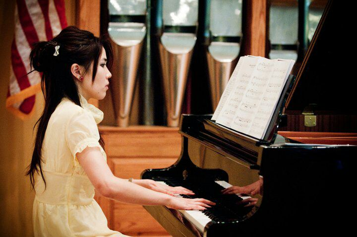
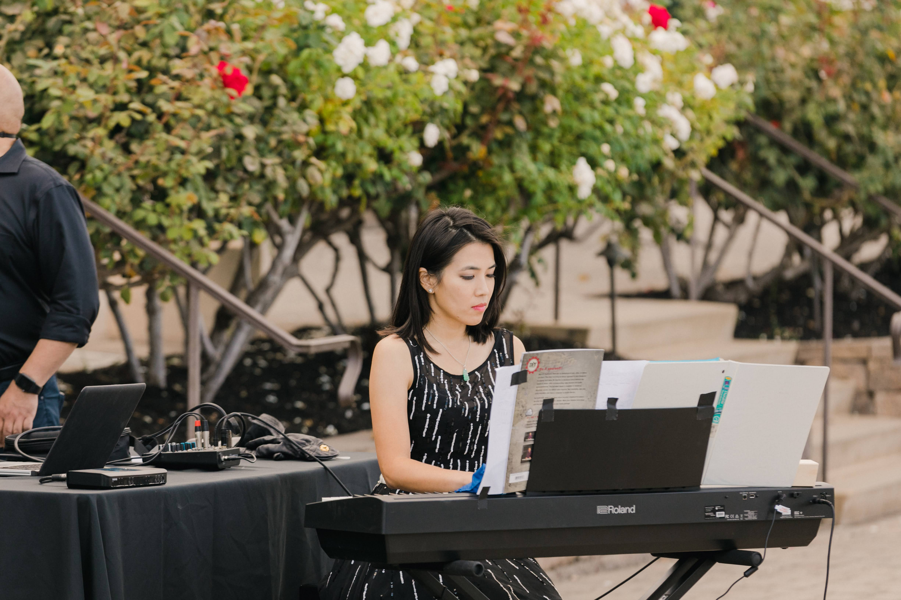

About

Ruby Cheung is a pianist and teacher based in Fremont, California, and has been teaching piano for over 20 years. She graduated with honors from the University of California, Berkeley with a degree in Music and works with students of all ages and experience levels, from young beginners to advanced students preparing for recitals, competitions, and Certificate of Merit (CM) evaluations.
Ruby is an active member of the Music Teachers’ Association of California (MTAC) and previously served as the Music Theory Coordinator for the Southern Alameda County Branch Certificate of Merit program. She also has experience preparing students for ABRSM examinations and evaluations.
Her teaching emphasizes strong musical foundations through technique, theory, ear training, sight reading, musical expression, and performance. While many students choose to participate in CM, recitals, and competitions, Ruby believes every student’s musical journey should be individualized based on their interests, personality, and goals.
More importantly, Ruby believes music education should help students develop confidence, discipline, creativity, and a lifelong appreciation for music. Her teaching style balances structure with encouragement, creating an environment where students feel both challenged and supported.
Ruby values building long-term relationships with students and families and believes that meaningful musical growth happens when students genuinely enjoy the learning process. Her greatest joy as a teacher is seeing students continue to carry music with them long after they leave her studio and head off into adulthood.
Ruby Cheung’s Piano Studio
Studio Policy

Thank you for your interest in Ruby Cheung’s Piano Studio. My goal is to create a warm, encouraging, and structured environment where students can develop strong musical foundations, confidence, creativity, and a lifelong appreciation for music.
Lessons are tailored to each student’s individual age, personality, experience level, and goals. Whether a student is learning purely for enjoyment or pursuing more advanced musical opportunities, I strive to create an environment where students feel both challenged and supported.
Lessons
Lessons are offered on a weekly basis and are individualized for each student. Instruction may include:
- Technique
- Music reading
- Theory
- Ear training
- Sight reading
- Musical expression and interpretation
- Performance preparation
Students of all ages and experience levels are welcome.
A piano or full-sized weighted keyboard at home is strongly encouraged to support consistent practice and progress.
Practice Expectations
Regular practice is one of the most important parts of a student’s musical growth. My goal is not only to teach students what to practice, but also how to practice thoughtfully and effectively over time.
Practice expectations will vary depending on each student’s age, level, and goals, but consistency is far more important than perfection. For beginning students especially, developing a steady daily routine and positive relationship with practice is the foundation for long-term success.
As a general guideline:
- Beginning students should focus on building a consistent daily practice habit
- Intermediate students should aim for approximately 30 minutes of daily practice
- Advanced students should expect closer to 1 hour or more of daily practice
Students are expected to come to lessons prepared and ready to learn. For younger students especially, encouragement and support at home can make a tremendous difference in both progress and enjoyment.
Tuition
Tuition is due in advance at the beginning of each 4-lesson cycle and reserves the student’s weekly lesson time and studio placement.
Current lesson rates:
- 30 minute lesson — $60
- 45 minute lesson — $90
- 60 minute lesson — $120
Accepted payment methods:
Tuition covers not only lesson time, but also individualized lesson preparation, curriculum planning, studio administration, and ongoing student support.
Attendance & Makeup Lessons
Please make every effort to attend lessons consistently and on time.
Missed lessons must be communicated at least 24 hours in advance, barring illness or emergency. Lessons missed without adequate notice will be charged in full.
Makeup lessons for absences with advance notice may be offered depending on scheduling availability but are not guaranteed.
If the teacher must cancel a lesson, a makeup lesson or credit will always be provided.
Repeated absences or inconsistent attendance may affect a student’s progress and studio placement.
Musical Opportunities
Students may have opportunities throughout the year to participate in:
- Annual studio recitals
- MTAC Southern Alameda Branch quarterly recitals
- Competitions and festivals
- Certificate of Merit (CM)
- ABRSM examinations and evaluations
- Music Student Service League (MSSL)
Participation is encouraged but not required and should ultimately support each student’s musical growth, confidence, and enjoyment.
Parent Communication
Open communication between teacher, student, and family is important. Parents are always welcome to discuss student progress, goals, or any questions regarding lessons.
For younger students, occasional parent observation may be encouraged to help support home practice and reinforce positive learning habits at home.
Studio Philosophy
While strong technique and musicianship are important, my deeper goal is for students to develop a lifelong love and appreciation for music — long after they leave the studio and head off into adulthood.
Every child learns differently, and I strive to create an environment where students feel both challenged and supported as they grow not only as musicians, but also in confidence, creativity, discipline, and self-expression.
Music education should be joyful, meaningful, and enriching, and I hope students leave each lesson feeling encouraged, inspired, and proud of their progress.